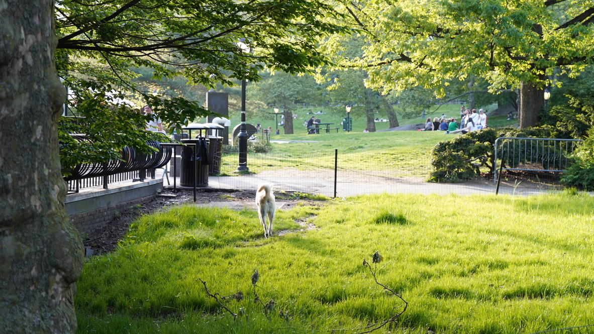

17 October 2024
Hi this is Kelly. I am trying to make my blog using HTML and CSS. I used to post my writings on Wordpress and now I think it's time to make improvements.
要轉CSS轉內文中文字體似乎用section係最易搞（能力範圍內的話）。有見到unicode range做解決方法，但同unicode唔太熟哈哈。不過最後都係用統一noto serif hk，中英都靚
Central Park Doggo!
目前拉扯大家最猛的還是家族負面業力。尤其老靈魂，這幾年如果不好好切割、清理、調整，很多人會掉溝裡去。對意識高而且敢於行動完成調整的人而言，主要就是這3年，2024-2027；對意識低而又不採取調整的人而言，人在，負業拉扯就在。目前能量最差的人類：一個是掉到冥界時間線的變異人群。這樣的人現在都是索命符，會加速完成本次轉世。這個通常是智慧比較缺乏，已經不具備人類意識。一個就是在普通人裏的老靈魂了。
Website resources